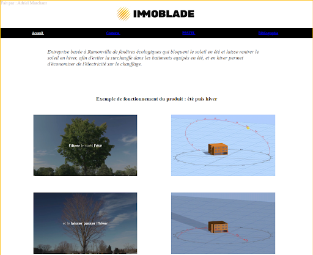
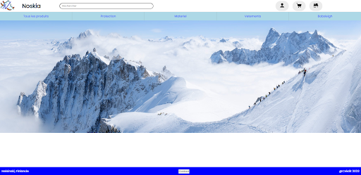

Compétence : Administrer des systèmes informatiques communicants complexes
Dans cette compétence le but était d'apprendre comment se servir des commandes bash, intéragir avec des machines virtuelles, comment les configurer et les mettre en place ainsi que comment sécuriser des fichiers grâce aux droits et utilisateurs. Pour illustrer ceci je vais vous montrer mon évolution au cours de mes années au sein de l'IUT à l'aide de projets qui me serviront d'exemples.
SAÉ (situation d'apprentissage et d'évaluation) : Installation d’un poste pour le développement
Le Niveau 1 de la compétence est de savoir :
- Identifier les différents composants d’un système numérique
- Utiliser les fonctionnalités de base d’un système multitâches
- Installer et configurer un système d’exploitation et des outils de développement
- Configurer un poste de travail dans un réseau d’entreprise
Contexte / Objectifs :
L'objectif de cette SAÉ était de mettre ene place une machine virtuelle (VM) sur Ubuntu (Linux ), qui doit etre configuré selon des paramètres donnés, et avec des outils de bureautiques donnés, ainsi que java, faire en sorte que la VM soit interopérable avec son système d'exploitation de base.
Difficultés et solutions
Les difficultés principales ont été, la configuration du volume de la VM, l'installation de certaines applications sur la VM ainsi que l'interopérabilité.
Résultats:
SAÉ : Installation de services réseau
Le Niveau 2 de la compétence est de savoir :
- Concevoir et développer des applications communicantes
- Utiliser des serveurs et des services réseaux virtualisés
- Sécuriser les services et données d’un système
Contexte / Objectifs :
Le but de cette SAÉ fut de mettre en place un hébergement pour des sites web réalisés au cours de notre formation
Résultats:
Hébergement d'un site de présentation d'une entreprise
 Hébergement d'un site pour une SAÉ
SAÉ : Développement d'une application
Le Niveau 3 de la compétence est de savoir :
- Choisir des structures de données complexes
- Faire évoluer une application existante
- Intégrer des solutions dans une environnement de production
Lien GitHub
DailyBankContexte / Objectifs :
Le but de cette SAÉ était la réalisation d'un application java de configuration pour paramétrer des capteurs, en faisant de la surveillance de seuils
pour faire cela nous avons utiliser une application python pour aquérir les données des capteurs, puis l'utilisation du JavaFX pour faire une interface graphique
Difficultés
La difficulté lors de ce projet était la liaison avec les autres applications, avec souvent un incompatibilité entre les langages.
Résultats:


SAÉ : Développement avancé
Lien GitHub
SAE IRITContexte / Objectifs :
L'objectif lors de cette SAÉ était de réaliser une interface graphique pour une application existante,
afin de représenter les arbes algébriques logiques générés par cette aplication afin de les rendre
utilisables même pour un utilisateur peu expérimenté dans le langage SQL
Difficultés
La difficulté lors de ce projet était la liaison avec les autres applications, avec souvent un incompatibilité entre les langages.
Résultats: